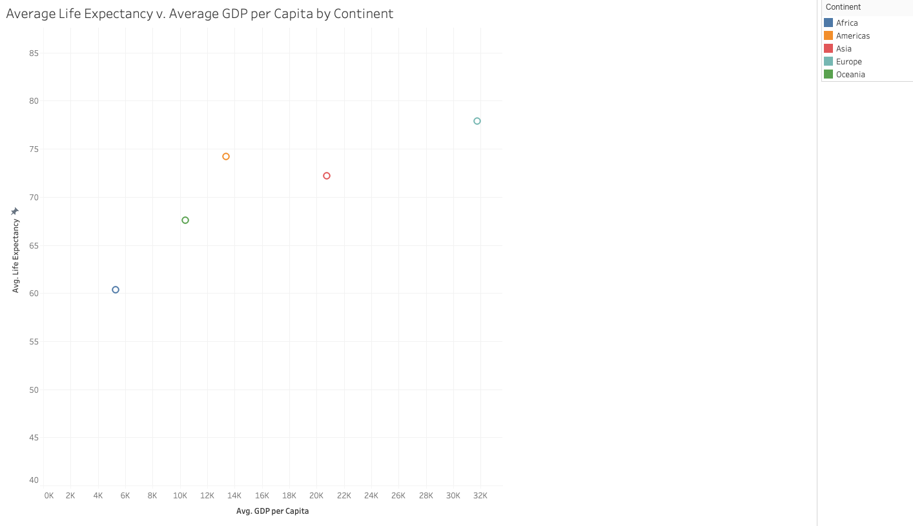

This dataset was taken from DataCamp, Introduction to Tableau course.
The dataset contains information about the GDP, Life Expectancy,
and Child Mortality from 1960 to 2014 across the world. I was curious
about how the life expectancy and GDP per capita varied by continent
between 2004 and 2014.

Average Life Expectancy v. Average GDP per Capita by Continent
Tableau is used to create the visualization with the horizontal axis representing
Average GDP per Capita and the vertical axis representing the Average Life Expectancy.
The data is filtered to only consider values from 2004 to 2014.
Each continent is represented by a color on the graph. North and South America are grouped
together as the Americas. Note that the vertical axis starts at 40, not 0 as the
minimu life expectancy is 60 years. The continent with the highest GDP and Life Expectancy
is Europe. It would be interesting to see how the values shift when looking at the median
instead of the average.
References:
https://app.datacamp.com/learn/courses/introduction-to-tableau